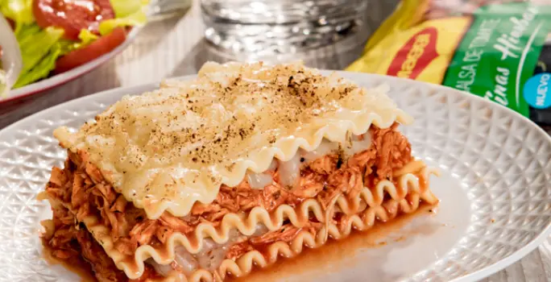

lasagna recet

chicken lasagna
The ideal Chicken Lasagna to pamper your family during the weekend, with the unique touch of MAGGI Fine Herbs Tomato Sauce.
ingredients
- 1 teaspoon vegetable oil
- 4 garlic cloves finely chopped
- 1/2 cup finely chopped onion
- 1 1/4 pound chicken breast cooked and shredded
- 2 sachets of Fine Herbs Tomato Sauce MAGGI®
- Salt and pepper to taste
- 1/2 pound of pasta for precooked lasagna
- 2 cups grated Nestlé® Mozzarella Cheese
steps to follow
- In a pot over high heat, pour the oil and fry the garlic and onion for 2 minutes. Add the cooked chicken together with the MAGGI® Fine Herbs Tomato Sauce and cook for 10 minutes over low heat. Adjust point of salt and pepper to taste.
- In a refractory container, pour a little MAGGI® Fine Herb Tomato Sauce, then cover with a layer of pasta, add the chicken, cover with the Nestlé® Mozzarella Cheese. Repeat this procedure one more time and cover with aluminum foil.
- Preheat oven to 300°C. Bake the container in the oven at 250°C for 40 minutes. Remove from the oven, let cool to room temperature and enjoy.